N O R A
La ciudad de Nora se localiza en Pula.
Antiguo Emporio Fenicio (siglos VII-VI
a.e.c.) que experimentó un considerable desarrollo durante la época
Púnica (siglos V-II a.e.c.). Durante el siglo VI a.e.c., la ciudad
vivió, gracias al dominio de los Cartagineses, un período de riqueza
económica debido al comercio con África.
Cerdeña se convirtió en romana en el 238 a.e.c.; la ciudad tuvo una
primera fase de florecimiento en la segunda mitad del siglo I a.e.c.,
cuando se convirtió en municipium, pero el momento de máxima vitalidad
fue entre finales del siglo II y durante el siglo III. A partir de la
época severa la ciudad asumió su trazado urbano definitivo, con la
construcción de la mayoría de los monumentos que aún hoy vemos en día.
Se calcula que estuvo habitada por unas 8.000 almas.
El lento y progresivo abandono se produjo a partir del siglo V,
probablemente debido a la invasión de los vándalos que llevó a la
población a trasladarse a las zonas más seguras del interior, hasta el
abandono total en la Edad Media.
No olvidemos los monumentos que actualmente no se pueden visitar como son el Tofet, el Anfiteatro, la Necrópolis, el Puerto...
Los restos del Acueducto romano del
siglo Il que fue renovado entre los años 425-450.
Los restos de la Muralla de 90m con orientación noreste-sureste.
Las Termas de Levante son uno de los cuatro complejos termales de la
época romana conocidos en la ciudad. Fuertemente erosionadas por el mar.
El complejo termal está compuesto actualmente por una serie heterogénea
de habitaciones Por la decoración del mosaico el edificio está datado en
el siglo IV.
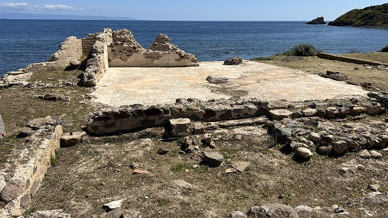
El Templo Romano ocupa la ladera sureste de la llamada "colina Tanit", entre los complejos monumentales del foro y el teatro. El complejo fue construido alrededor del año 230. sobre los restos de edificios sagrados y residenciales anteriores. Excavado primero en 1952 y posteriormente entre 2008 y 2014 por la Universidad de Padua, se encuentra dentro de un área (períbolos) de mampostería, al que se abre un patio de mosaicos. Una corta escalera frontal, interrumpida por un altar de mampostería, conduce al edificio de culto, compuesto por un pronaos con seis columnas (hexástilo) y una celda cuadrangular, con suelo de mosaico y muros exteriores salpicados de semicolumnas; al final de esta última, se encuentra una estancia privada, (el penetrale), donde se guardaba el simulacro de la divinidad. Además, en el lado occidental del edificio, se extiende un corredor descubierto, que permite el acceso a tres salas alineadas relacionadas con diversas prácticas religiosas, probablemente vinculadas al culto imperial. Un pequeño tesoro de 18 monedas de plata, asociado a una losa de arcilla que representa un rostro humano, fue hallado en la sala más meridional, que data de los años de la fundación (227 a.e-c.).
 |
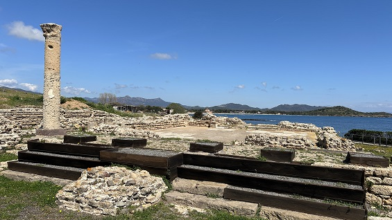 |
El Foro era el mayor complejo monumental de la
ciudad romana, dedicado al desempeño de importantes funciones cívicas,
políticas y administrativas. El área estaba compuesta por una gran plaza
pavimentada (34 x 44,2m), ricamente decorada con una serie de estatuas
honorarias y flanqueada por dos pórticos, tras los cuales se abrían, en
los lados oeste y este, la curia y la basílica. En el lado norte se
conservan los restos de un templo, mientras que el lado sur se ha
perdido por completo debido a la erosión marina.
Construido en la segunda mitad del siglo I a.e.c. Entre finales del
siglo II y principios del III el foro fue sometido a una intensa mejora
arquitectónica, que continuó con restauraciones en los dos siglos
posteriores, hasta el colapso de la ciudad, que llegó con la conquista
vándala de la isla. Bajo del suelo del Foro, en la parte oriental, se
conserva los restos de un barrio de época púnica.
|
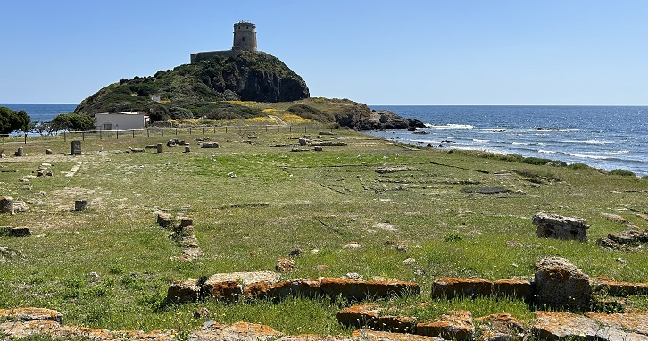 |
El Teatro romano se encuentra en el centro de la ciudad, en la ladera sur de la llamada "colina Tanit". El teatro siempre permaneció visible después de la época antigua y, por ello, fue el primer edificio excavado en 1952. Tras importantes obras de restauración, el edificio conserva actualmente la parte inferior de la escalinata (ima cavea), las dos entradas laterales con bóveda de cañón (aditus maximi), con tribunas superpuestas (tribunalia) accesibles mediante escaleras, así como el espacio de la orquesta y las imponentes estructuras del sector escénico (scaenae frons). La capacidad del teatro debía de rondar los 1000 espectadores. La disposición original del complejo se remonta a la época imperial temprana, mientras que entre las diversas intervenciones de modificación posteriores, destaca la construcción de un pórtico tras el muro frontal del escenario (porticus post scaenam), del que se conservan doce bases de columnas.
|
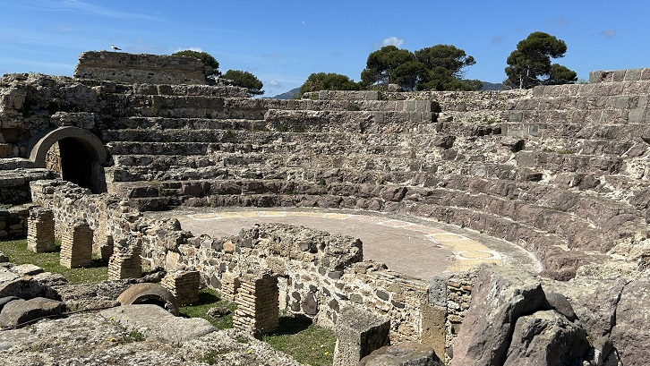 |
La Casa del Viridarium se ubica inmediatamente al oeste del foro, a lo largo de la carretera que flanquea el pórtico tras el teatro. La planta del edificio, bastante irregular, se compone de dos núcleos diferenciados, de los cuales la reconstrucción del sector norte es más clara. Se articula en torno a una amplia zona abierta, rodeada por un pórtico (peristilo) y ocupada por un jardín, enriquecido a los lados por una profunda pila subterránea. Inicialmente se asoció con una función de letrina pública o de curtiduría, más que de lavado de ropa (fullonica). Actualmente, sin embargo, se tiende a reconocer el edificio como una casa (domus) con un peristilo ajardinado (viridarium), construida en la época imperial primera o media (siglos I-II).
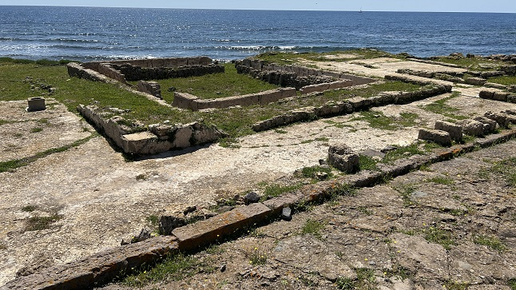
Las Casas Tardoantiguas del Bario Central. El distrito central de Nora, situado entre las dos carreteras que conducen al promontorio sur de la península, mantuvo a lo largo del tiempo una marcada vocación residencial: en la zona se conocen restos de estancias domésticas de las épocas romana republicana e imperial, así como uno de los conjuntos residenciales tardoantiguos más significativos de toda Cerdeña. La vivienda mejor conservada se encuentra la carretera que separa el distrito central de las casas de la costa sur. La vivienda cuenta con una planta baja de uso artesanal, que gira en torno a un patio abierto con un horno circular; más al norte, un segundo espacio abierto con un pozo da acceso a un almacén y a un hipotético establo, mientras que hacia el sur hay un segundo depósito, un cobertizo y una sala de producción equipada con prensas y trituradoras. Una escalera de madera daba acceso a las estancias habitables de la planta superior, que no se conserva.
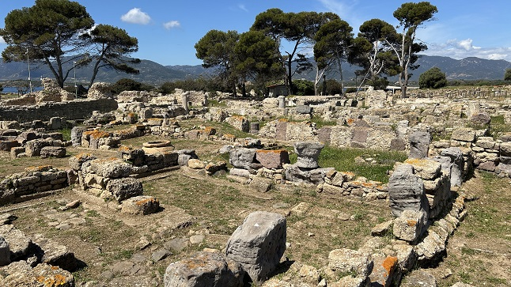
Las Casas en la Costa Sur. El barrio residencial que se extiende a lo largo de la costa sur de la península de Nora está formado por edificios en gran parte erosionados por el mar, dispuestos a lo largo del lado sur de la carretera que conduce desde la zona del teatro hacia el santuario de Esculapio. Se le atribuyen una sucesión de varias fases, desde la época fenicia hasta la época imperial romana. El distrito, recientemente reexaminado, se compone de seis sectores adyacentes, cada uno agrupable en dos bloques. El primer bloque se extiende entre la llamada casa del viridarium y un callejón que se dirige al mar, atravesado por el desagüe procedente de las Termas centrales. En su interior se distinguen tres núcleos residenciales en varios niveles, el primero de los cuales, más conocido, contaba con una bodega subterránea.
|
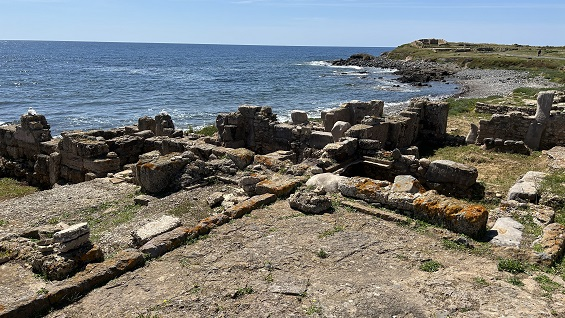 |
|
Las Termas Centrales ocupan el sector sur del distrito central de Nora. El complejo fue construido en la segunda mitad del siglo II, sufriendo modificaciones hasta la primera mitad del siglo V. La entrada, originalmente por el lado sur, daba paso a una pequeña habitación, que conducía a un espacio probablemente descubierto; desde aquí, tras pasar una hipotética letrina, se accedía a una gran sala central de mosaico (frigidarium), que comunicaba al este con los vestuarios (apodyterium). El recorrido de baño requería entonces continuar hacia el oeste, hacia el sector calentado, organizado según un esquema circular de uso: una primera sala templada (tepidarium) facilitaba el paso gradual hacia la sala absidal para baños calientes (caldarium); posteriormente, una segunda sala de temperatura media permitía el retorno, hacia la salida. A finales del período antiguo se abrió una nueva entrada a lo largo del lado norte, mediante la construcción de un corredor de mosaico.
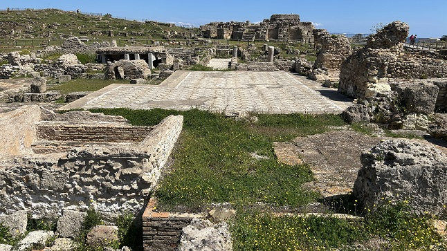
Las Casas del Litoral Meridional. El segundo bloque de viviendas del distrito costero sur se extiende más allá del callejón que conduce al mar y continúa hasta la carretera que lleva al Santuario de Esculapio. Parte de las estructuras actualmente visibles está construida con la técnica llamada "entramado" (opus africanum), que consiste en la disposición alternada de pilares de piedra verticales y horizontales, lo que resulta en espacios rellenos de piedras irregulares de pequeñas dimensiones, a veces unidas con mortero. El primer sector está ocupado por un claro de planta casi trapezoidal, provisto de una fuente circular, que cumple la función de conectar la diferente orientación de los dos bloques, determinada por la forma de la península. A continuación, se encuentran dos sobrias pero dignas viviendas de la época romana, caracterizadas por su articulación en varios niveles, la posición descentralizada de las entradas y la característica presencia de un patio en el que giraba la vida doméstica.
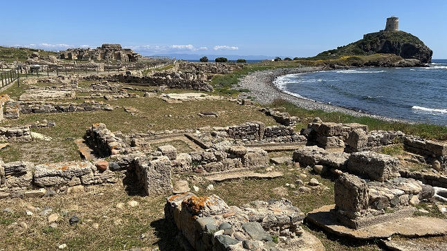
El Santuario de Esculapio se localiza en el extremo sur de la península de Nora, en el cabo de Pula. El complejo arquitectónico actualmente visible se encuentra dentro de un área sagrada de la época púnica (siglo V a.e.c.), del cual se conservan un muro de bloques de arenisca y la base de un santuario de culto (ma'abed). Un depósito votivo compuesto por seis estatuas de terracota que representan a donantes y devotos dormidos, una de las cuales está enroscada en una serpiente, animal consagrado al dios de la medicina. El templo data de la época republicana romana (siglo II a.e.c.). En los siglos III-IV, el santuario se monumentalizó en varios niveles: el primero, accesible desde el norte a través de una escalera, incluía un patio de mosaicos y, hacia el oeste, una serie de salas alineadas; La segunda, también a través de una escalera, conducía al pronaos y luego a la celda del templo, esta última dotada de suelo de mármol (opus sectile) y dos entradas a una sala absidal y el penetral.
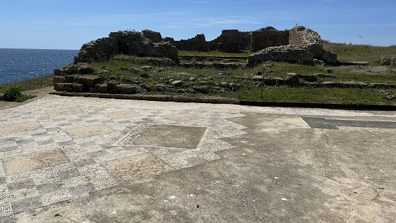
La Casa del Atrio Tetrastilo es la
más elegante de Nora es una vivienda de la época imperial romana de
Nora, ubicada en el sector sur de la península. La casa fue construida a
finales del siglo II o principios del III sobre los restos de
estructuras más antiguas, sufriendo diversas modificaciones a lo largo
del tiempo.
La entrada principal estaba orientada al sureste, desde donde, desde el
pórtico frontal, se accedía, a un patio con un estrecho corredor que
conducía a un estanque central para la recogida de agua de lluvia (impluvium),
caracterizado por cuatro columnas del pórtico de entrada y que fueron
reubicados a partir de las excavaciones de finales de la década de 1950.
Desde el patio, a través de pasillos, se accedía a las distintas zonas
de la casa, tanto de carácter noble y representativo, como de usos
secundarios. En el interior de algunas estancias se conservan cinco
suelos de mosaico con motivos geométricos, datados entre finales del
siglo II y principios del III y finales del siglo III y principios del
IV. Destaca el mosaico de una estancia a la izquierda de la entrada,
caracterizado por una representación de la Nereide que surca las olas
del mar montada en un monstruo marino.
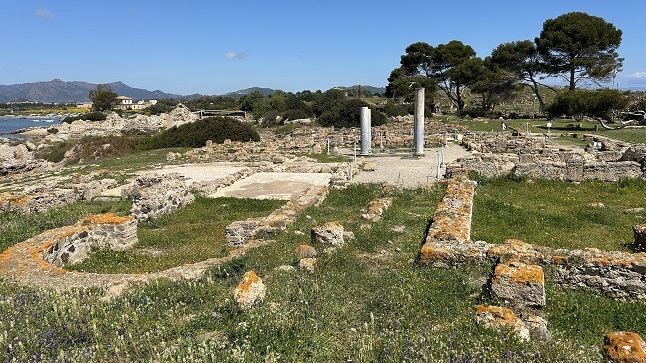
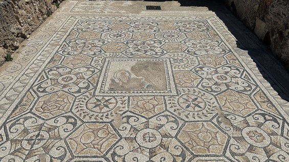
La Casa del Director Tronchetti se encuentra al norte de la Casa del atrio tetrástilo. Separada de esta última por un estrecho camino. La entrada principal se ubicaba en el lado oriental, desde donde un corredor conducía al patio, alrededor del cual se disponían las distintas estancias del edificio. Cuatro columnas, de las que solo se conservan las bases, debieron caracterizar el patio central, rodeado de pórticos en los cuatro lados y equipado en el centro con una pila donde fluía el agua de lluvia (impluvium). Datada entre finales del siglo II y principios del III. La casa del director Tronchetti sufrió sin duda renovaciones y modificaciones estructurales a lo largo del tiempo, con la oclusión del impluvium, la elevación de los niveles del suelo en varias estancias y la construcción de tabiques que remodelaron la organización espacial del edificio.
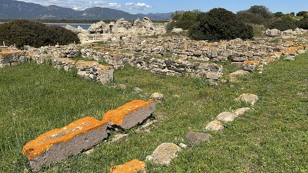
Las Termas del Mar son el
mayor complejo termal de Nora. Se encuentra en el sector occidental de
la península, al final de la carretera que atraviesa toda la zona
urbana. El edificio se construyó entre finales del siglo II y la primera
década del siglo III, con restauraciones en la primera mitad del siglo
V.
El complejo, de más de 2000 metros cuadrados, era accesible desde la
calle a través de una escalera que daba a un pórtico, que conducía al
atrio principal y a un vestuario con mosaicos (apodyterium). Un segundo
atrio, simétrico al primero y posiblemente destinado a las mujeres,
conducía a la gran sala de baños fríos (frigidarium).
El frigidarium permitía acceder a las habitaciones calentadas por una
serie de hornos dispuestos a lo largo de un pasillo subterráneo en el
sector occidental, hoy en gran parte erosionado por el mar. En las salas
calientes, aún es posible apreciar parcialmente el sistema de
intersticios del suelo (suspensurae) y muros que permitían la
circulación del aire caliente.
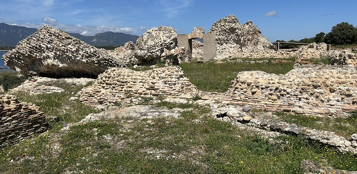
A través de la Calle romana, nos dirigimos a la Basílica Cristiana.
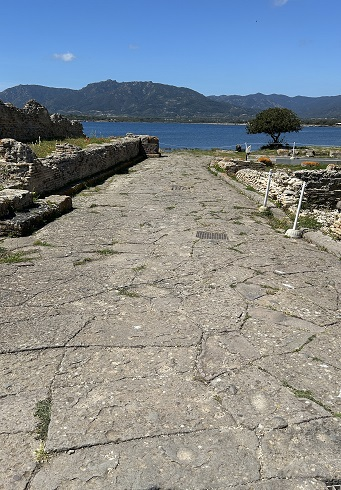
La basílica cristiana, gravemente
dañada por la erosión marina, se alza en el sector occidental de la
península, en el lado que da al mar, y se extiende perpendicularmente a
la carretera que conduce al puerto.
La basílica, orientada al oeste, tiene planta rectangular (33 x 22 m) y
una portada marcada por seis columnas o pilares, de los cuales se
conservan las bases cuadrangulares.
Una sala porticada transversal daba acceso a la sala de culto, dividida
en tres naves comunicadas entre sí por una serie de vanos arqueados; la
nave central remataba con un ábside semicircular y probablemente
tenía una altura mayor que las laterales.
A lo largo del lado norte de la basílica se encuentran los cimientos de
una estructura circular, cuya función aún hoy parece incierta (un
baptisterio). La construcción del complejo se data generalmente en el
siglo.
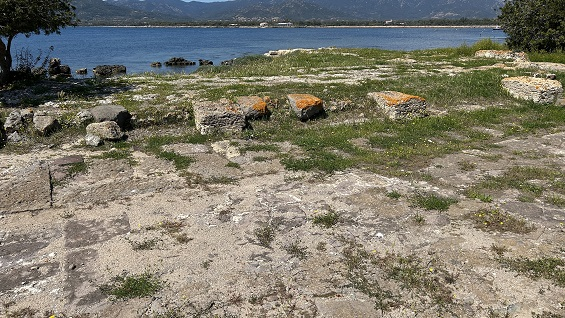
El Complejo Multiusos en el distrito noroccidental de Nora se encuentra un gran edificio de planta rectangular, cuya función ha sido objeto de diversos debates. Anteriormente interpretado como hotel (hospitium), mercado de abastos (macellum) o almacén de grano (horreum), más recientemente se ha propuesto una interpretación multiusos, como edificio residencial-comercial (insula). La planta visible hoy en día es el resultado de dos fases constructivas distintas, que transcurrieron entre mediados del siglo III y la primera mitad del siglo siguiente. En su forma actual, el edificio se organiza en torno a un gran patio abierto con un pozo, probablemente utilizado como almacén. A lo largo del lado norte hay un largo corredor, que da acceso a una serie de pequeñas habitaciones alineadas, posiblemente utilizadas como almacén, y que está conectado a un pórtico al oeste. Este último da acceso a un grupo de tiendas que dan a la calle; las tiendas también se extienden a lo largo del lado sur del complejo. El edificio también contaba con una planta superior, destinada a uso residencial.
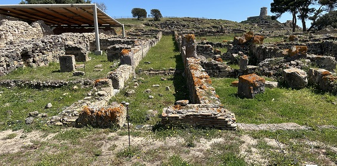
Las Termas Pequeñas se ubican
en el sector occidental de la península, a lo largo del lado oriental de
la carretera que conduce al puerto. La planta actual del complejo
termal, caracterizada por un desarrollo estrecho y alargado, es el
resultado de dos fases constructivas.
El núcleo principal del edificio pertenece a la fase original de
principios del siglo III d. C., precedido por un espacio porticado y
delimitado al sur por un callejón perpendicular de acceso al complejo.
La sala de los baños fríos (frigidarium) se reconoce en la sala central
rectangular pavimentada con mosaicos (a), desde la cual se continuaba
hacia las dos salas templadas (tepidaria; b, c) para finalmente acceder
a la sala absidal con una piscina para los baños calientes (caldarium;
d), alimentada por un horno semienterrado (praefurnium; e) situado tras
el muro curvo. Durante el siglo IV d. C., parte del callejón del lado
sur se incorporó al edificio termal y se anexó un vestuario con suelo de
mosaico (apodyterium; f), conectado, a través de un pasillo (g), con la
entrada desde la carretera del puerto.
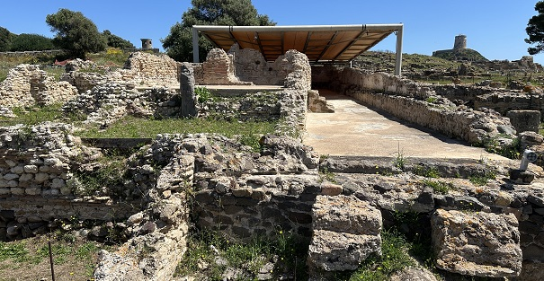
El Barrio de las Casas-Tiendas
se ubica en el sector occidental de la península, a lo largo del lado
este de la carretera que conduce al puerto. Se trata de un complejo
construido sobre estructuras antiguas y dividido en una serie de
edificios de tamaño modesto, con una doble función residencial y
comercial. Tres casas-tiendas, una junto a la otra, pertenecen a una
fase inicial del siglo II, cada una de las cuales constaba de dos
habitaciones comunicadas, probablemente equipadas con una entreplanta.
Las habitaciones delanteras, de planta rectangular, se utilizaban como
tiendas y daban a la carretera que conducía al puerto.
Los espacios traseros de planta cuadrada, se utilizaban como viviendas o
almacenes. Una reestructuración decisiva del barrio se remonta a la
sustitución del local comercial central por una pequeña domus de dos
plantas, compuesta por dos salones al este del pasillo de entrada y una
sala de servicio al oeste, que comunica con el local comercial adyacente
que da al pórtico de la calle.
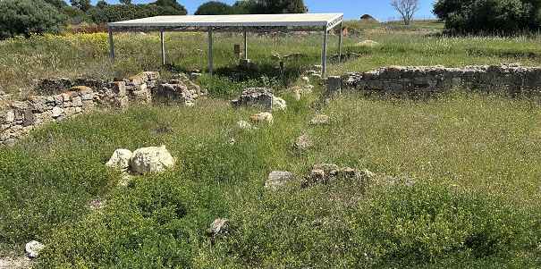
Continuamos por sus calles y edificios.
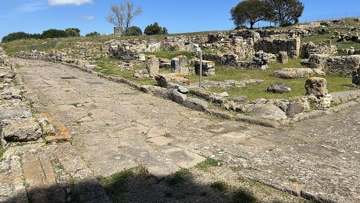
A lo largo de la ladera sur y sur de
la ciudad residencial conocida como la "kasbah", se construyó una
Fuente Pública de ladrillo en el siglo III en la plaza pública
porticada, precedida por un pavimento de andesita. La estructura tiene
forma cuadrada. Con el lado que da a la plaza configurado como un
semicírculo; detrás se encuentra la base de un gran tanque, utilizado
para abastecer la fuente y redistribuir el agua al vecindario cercano, a
través de un complejo sistema de canales de drenaje.
En el fondo de la cuenca, en el momento de la excavación, se identificó
un dibujo, hoy difícil de leer.
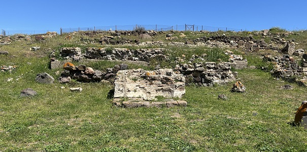
La llamada "Kasbah" es un
denso barrio occidental de la colina Tanit. La particular forma del
complejo, orientada al suroeste, y la técnica de construcción empleada,
que recuerda las soluciones habitacionales de la tradición púnica del
norte de África, dan origen a la particular definición del barrio.
El complejo, construido en varias fases entre la época republicana y la
Antigüedad tardía, está dividido en dos sectores por un estrecho
callejón y se compone de modestas viviendas. La zona oriental se
caracteriza por un número limitado de habitaciones y, en ocasiones, por
un patio; la zona occidental, más visible, se caracteriza por una casa
señorialbcon un entorno porticado en dos niveles. También se encuentran
numerosas estructuras hidráulicas, en particular una fuente de
ladrillos, abastecida posteriormente por un depósito, en el que se ha
reconocido el punto de llegada y distribución del acueducto (castellum
aquae).
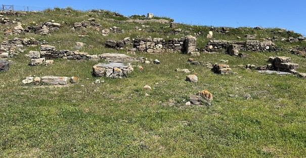
El llamado "Ninfeo" se ubica en el distrito
central de la ciudad. El edificio fue descubierto por Gennaro Pesce en
la década de 1950, se interpretó inicialmente como un ninfeo. Una
reciente revisión por parte de la Universidad de Milán ha aclarado su
función como vestíbulo formal, a la entrada de una residencia privada o
la sede de una asociación desconocida. La estructura, que conserva
restos de yeso rojo en las paredes y un rico suelo de mosaico que data
de la primera mitad del siglo III, probablemente tenía dos plantas, con
acceso directo desde la calle principal.
Consiste en una gran sala trapezoidal y dos salas más pequeñas ubicadas
tras el muro del fondo.
La sala principal cuenta con una piscina central descubierta (impluvium),
delimitada por dos muros paralelos de ladrillo, puntuados por cuatro
nichos probablemente situados en correspondencia con grandes ventanales.
Los muros, además, debían sostener la cubierta inclinada de cuatro
corredores laterales, divididos en dos naves por una hilera central de
tres pilares de ladrillo.
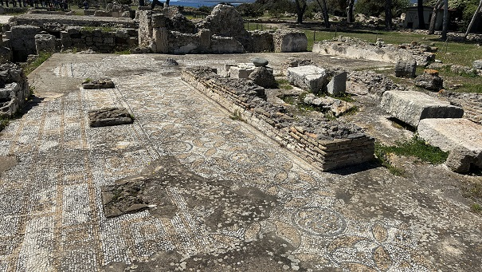
Los restos del llamado "Templo de Tanit" se
encuentran en la cima de la colina que se alza en el centro de la
península de Nora.
Las excavaciones realizadas a principios del siglo XX descubrieron los
restos de una cimentación de mampostería de 10 x 11 m, sobre la que
probablemente se construyó un complejo conjunto estructural, consistente
en un edificio con una planta difícil de reconstruir o un simple altar
al aire libre con un recinto de columnas.También descubrieron una piedra
piramidal de 56 cm de altura, interpretada como una imagen de la diosa
cartaginesa Tanit, a quien supuestamente estaba consagrado el edificio.
Datado definales del siglo VI-V a.e.c, con un uso continuo hasta finales
del período helenístico, mediados del siglo III a.e.c.
| CERDEÑA | MENÚ |